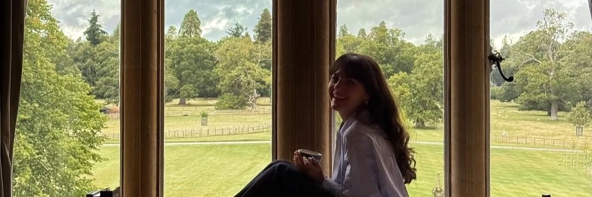

astro.takvim, yorum değil ölçüm ilkesiyle hazırlanan bir Ay takvimi projesidir.
Buradaki tüm burç geçişi ve evre tarihleri, güncel astronomik hesaplamalara dayanır. Tahmin veya kopya içerik kullanılmaz.
Ay döngüsünü kişisel bir pratiğe dönüştürmek, gözlemi yorumdan ayırmak ve sadeliği merkeze almak için.
astro.takvim, yıllarca süren Ay gözlemlerinin ve notların birikimiyle doğdu. Amacım, Ay'ın evrelerini ve burç geçişlerini herkesin anlayabileceği, sade ve güvenilir bir dille sunmaktı. Çoğu takvim ya fazlasıyla mistik ya da tamamen teknik; burada ikisinin arasında, yalın bir köprü kurmaya çalışıyorum.
Her geçiş ve evre, gökyüzündeki gerçek konuma göre işlenir. Bu sayede astro.takvim, hem günlük pratiğine rehberlik etmek isteyenler hem de astronomik veriye meraklı olanlar için bir referans noktası olabiliyor.